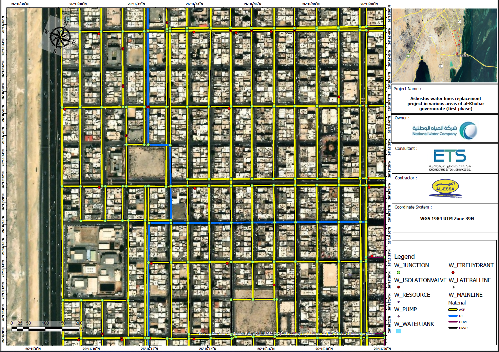
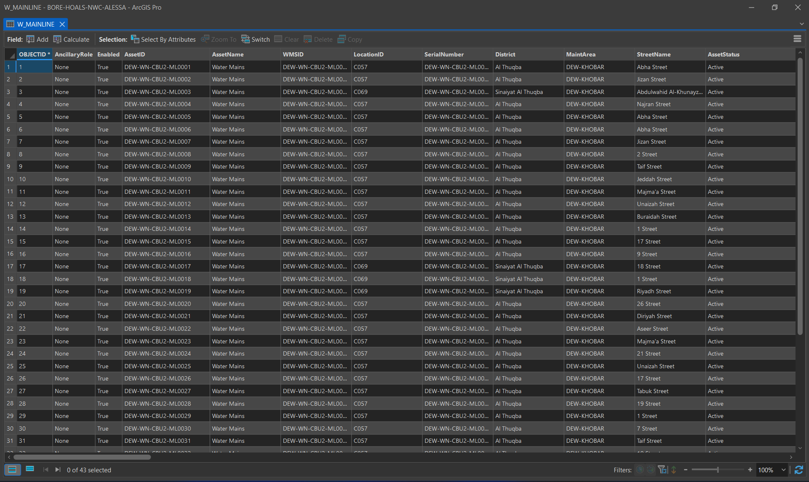
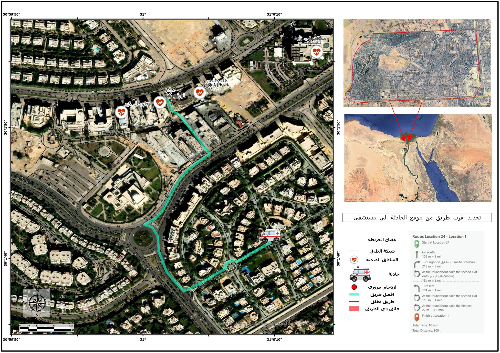
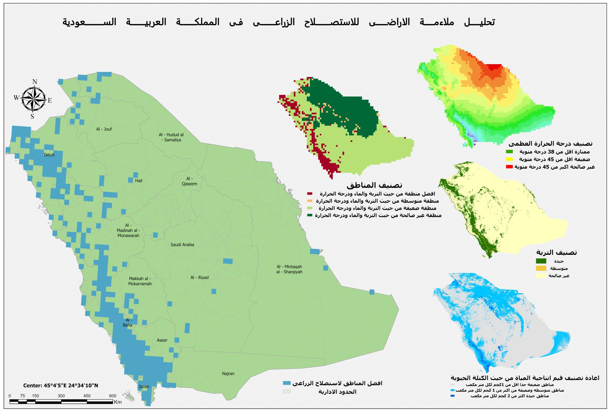
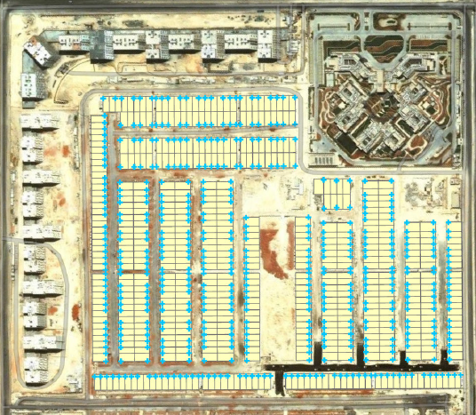

Projects
Real-world GIS engineering projects — from infrastructure documentation to spatial analysis and Python automation.

InfrastructureAsbestos Water Line Replacement
↗GIS documentation and AutoCAD As-Built drawings for new water distribution networks replacing aging asbestos pipelines across Al Thuqbah and Al Khobar — diameters from Ø110mm to Ø600mm, fully NWC-compliant.

GeotechnicalBorehole Investigation Documentation
↗Structured GIS spatial database for geotechnical borehole investigation records — organized, quality-controlled, and validated against National Water Company data standards.

Urban PlanningPalm Hills Urban Planning Study
↗Network-based GIS analysis evaluating hospital service coverage and ambulance response times for a residential compound in 6th of October City — identifying accessibility gaps for planners.
 Python Tool
Python Tool
Pipe Network Automation Tool
↗Custom Python and ArcPy automation tool that classifies and formats infrastructure GIS data to NWC schema — eliminating hours of repetitive manual data preparation per project.

Spatial AnalysisSpatial Analysis — Saudi Arabia
↗Series of GIS spatial studies across Saudi Arabia — terrain and slope modeling, flood flow direction, agricultural land suitability evaluation, and site selection using DEM data.

Asset DocumentationWater Meter GIS Documentation
↗Complete GIS asset inventory of water meter locations for Tilal El-Narges — spatially accurate, attribute-complete, and formatted for official NWC submission and long-term asset management.